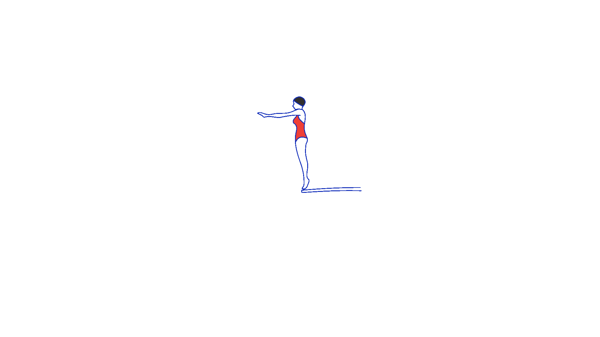
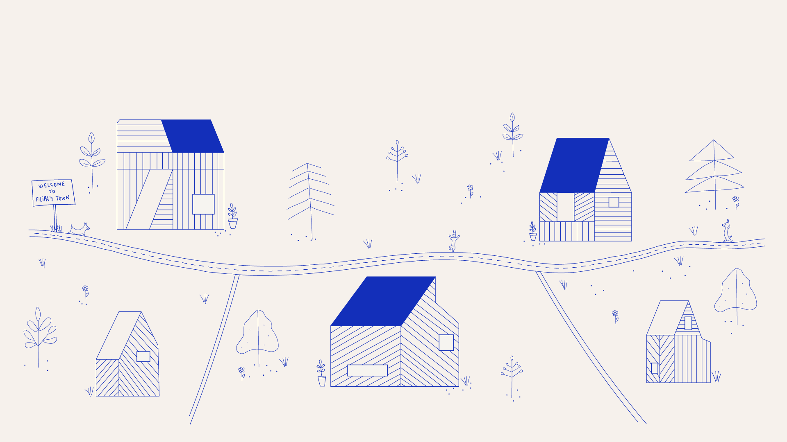
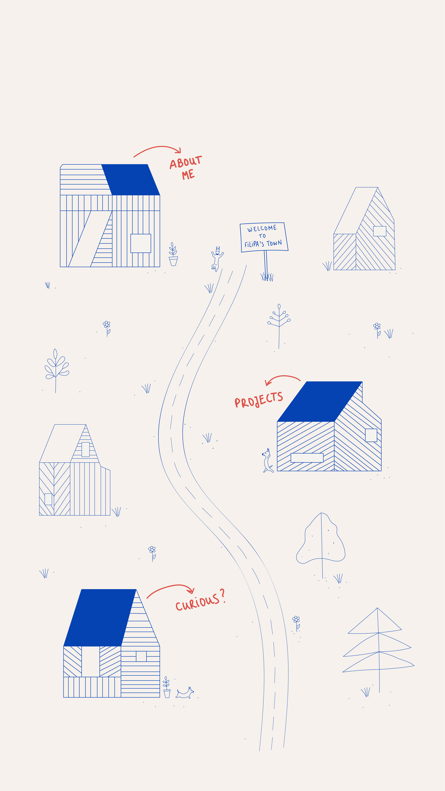
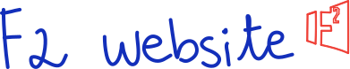
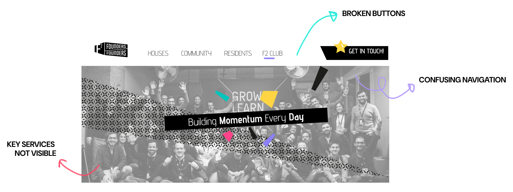
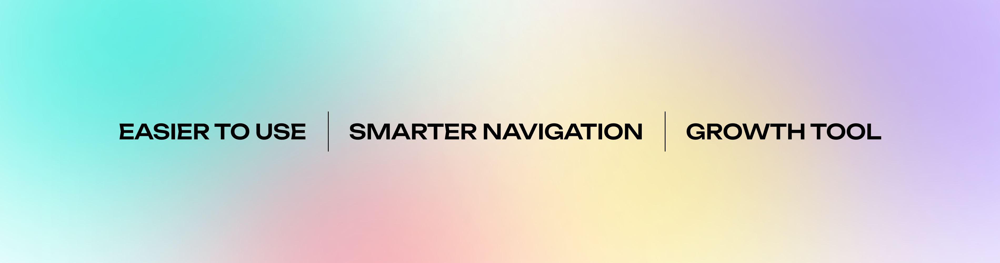

Founders Founders (F2)
Website Redesign
Work Type
Stack

Where it all began
Founders Founders supports entrepreneurs and startups through incubation programs, community initiatives and workspace services.
When I joined during my internship, the website didn't reflect any of that. Broken buttons, navigation that went nowhere, key services buried where no one would look. The company had something genuinely valuable to offer and the website was the last place you'd figure that out.
It wasn't a visual problem. It was a structural one.

The mission
Turn the website from a digital placeholder into something that actually worked: bringing in the right people, communicating the right things, and making it easy to take the next step.
Not just a prettier website. A more useful one.

From chaos to clarity
Before touching anything, I needed to understand what was broken and why.
I audited the existing site, mapped where things fell apart, and looked at what competitors were doing. Most had decent navigation but none of them made their unique programs feel like the main event. That gap was the opportunity.
User personas kept decisions grounded in real motivations, mostly founders and startup teams actively looking for incubation support, so nothing was designed in the abstract.

Designing the user's path
I ran a card sorting activity with stakeholders and potential users to figure out how the content should actually be organised.
It's one of those exercises that always surfaces something unexpected. What the business thinks is important and what users go looking for first aren't always the same thing. The goal was to find the structure that worked for both.
The result was a cleaner sitemap where the incubation program, services and community had the prominence they deserved. Wireframes followed: consistent layouts, clear hierarchy, calls-to-action placed where people would actually see them.

Giving shape to the vision
The visual layer was being handled by the graphic design team, so my scope was the structure underneath it.
What I delivered were implementation-ready wireframes: detailed enough to communicate layout logic and conversion intent, flexible enough to receive the visual identity on top without losing the structure underneath.
The foundation was the deliverable. And foundations only matter if what gets built on them holds up.

From vision to implementation
A few months after my internship ended, the website went live based on the wireframes and architecture I had delivered.
I wasn't there for the final visual execution, but the implemented site followed the structural decisions from the UX phase. Which was the whole point.

The impact
After the update, the incubation program reached full capacity, new scaleups joined the community, and a second edition is already being launched.
Better structure and visibility for the right services turned a static website into something that actually drove growth.
This project taught me something I haven't forgotten: you don't need to own the final product to have a real impact on the outcome. Strong UX foundations show up in the results whether or not your name is on the last file.